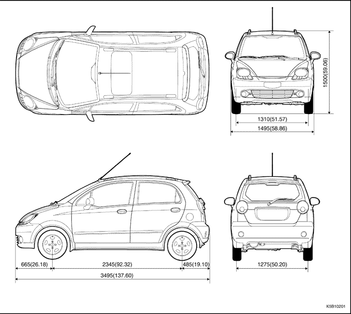
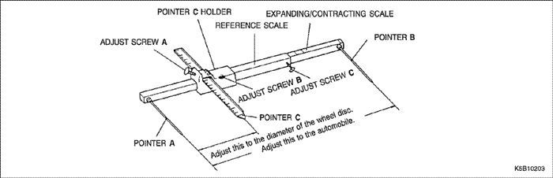
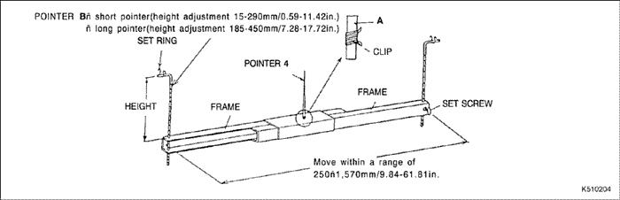

PREPARATIVOS PARA LAS REPARACIONES DE LA CARROCERÍA
DESCRIPCIÓN GENERAL
- La mayoría de las carrocerías monocasco son construidas como un bloque integral compuesto por componentes troquelados, hechos de chapa de acero, de diferentes formas y tamaños, soldados entre sí. Cada componente debe tener cierta resistencia y durabilidad para poder desempeñar su papel en las funciones de la carrocería como conjunto.
- Los daños en la parte exterior de la carrocería pueden ser inspeccionados visualmente pero, donde se haya producido un impacto externo, es necesario evaluar la magnitud de la avería En algunos casos, la deformación se extiende más allá de las zonas realmente involucradas en la colisión y, por lo tanto, se debe realizar una inspección minuciosa.
| KALOS (HATCHBACK) | Unidad: mm (pulg.) |



Alineación de las ruedas delanteras
| Ángulo de caída | 0°30' ± 45' |
| Ángulo de avance | 3°48' ± 60' |
| Convergencia (en orden de marcha) | 0°10' ± 10' |
Alineación de las ruedas traseras
| Ángulo de caída | -1°30' ± 30' |
| Convergencia (en orden de marcha) | 0°15' ± 20' |
PUNTOS A VERIFICAR
- Inspección exhaustiva de los componentes dañados (visual).
Cinturones de seguridad
Sustituya siempre los cinturones de seguridad si:
- El material del cinturón está cortado, perforado, quemado o presenta algún tipo de daño.
- La hebilla o el retractor no funcionan bien.
- Se deterioraron en el momento de una colisión (compruebe también si se ha producido daño en los puntos de anclaje).
- Su estado es cuestionable.
Sección delantera:
- ¿Hay alguna distorsión, separación, grieta o cualquier otro tipo de daño en la suspensión y sus componentes asociados?
- ¿Se ha producido alguna deformación en el panel delantero o en el travesaño del radiador? ¿Se ha desprendido alguna de las secciones asociadas?
- ¿Hay algún pliegue o distorsión en el paso de rueda delantera o en el bastidor lateral? ¿Se ha desprendido alguna de las secciones asociadas?
- ¿Hay algún alabeo o distorsión en toda la zona delantera?
- ¿Hay alguna deformación como, por ejemplo, pliegues, engrosamiento o grietas en el montante delantero, el panel del salpicadero, el piso, etc.?
- ¿Hay algún alabeo vertical o alguna separación por desalineación en la puerta?
- ¿Está roto el sello del parabrisas?
- ¿Hay alguna deformación cerca de la parte superior del montante central de los paneles del techo?
- ¿Se ha producido algún daño en el interior del automóvil (hay alguna distorsión en el panel del salpicadero, o algo anormal en cuanto a las holguras de los componentes de chapa de acero)?
- ¿Se ha producido algún daño en el volante de la dirección? ¿Hay alguna deformación en la columna de la dirección o en los componentes asociados?
- ¿Hay alguna fuga de aceite o agua, o daño en el motor, la transmisión o los frenos?
- ¿Se escucha algún ruido anormal cuando se cambian las marchas, en el motor o en la rotación de la transmisión?
- ¿Hay alguna marca de contacto entre el bloque del motor y el travesaño central?
- ¿Se ha producido algún daño en las tuberías de los frenos o del sistema de alimentación de combustible, o en el cableado?
Sección trasera:
- ¿Hay alguna distorsión, engrosamiento o grieta en los travesaños del piso trasero? ¿Se ha desprendido alguna de las secciones asociadas?
- ¿Hay algún engrosamiento anormal o grieta en el guardabarros trasero?
- ¿Hay alguna distorsión en el panel interior trasero? ¿Hay alguna distorsión o rajadura en las cercanías del montante trasero?
- ¿Hay alguna distorsión o pliegues en el paso de rueda trasera o en las secciones de refuerzo? ¿Se ha desprendido alguna de las secciones asociadas?
- ¿Se observa alguna irregularidad en la holgura del sello de la luna trasera?
- ¿Hay alguna distorsión o mala alineación en la holgura de la sección del vano de la tapa del maletero?
- ¿Hay alguna distorsión, separación, grieta o cualquier otro tipo de daño en la suspensión y sus componentes asociados?
- ¿Hay alguna deformación en el travesaño del piso trasero, el panel del piso del maletero y el panel trasero? ¿Se ha desprendido alguna de las secciones asociadas?
Travesaño lateral de impacto :
Sustituya siempre el conjunto de la puerta si:
- Las fuerzas externas hacen que se deforme el travesaño lateral de impacto de la parte interior de la puerta.
- Sustituya siempre el travesaño lateral de impacto si:
- Las fuerzas externas hacen que se deforme el travesaño de impacto de los parachoques delantero y trasero.
CORRECCIÓN DE LA ZONA DAÑADA
- Coloque la carrocería del coche sobre la bancada.
- El bastidor lateral puede repararse desabollándolo.
- Utilice las mordazas de sujeción horizontal soldables para fijar el coche a la bancada.
SISTEMAS DE MEDICIÓN (SIN DAÑO PEQUEÑO)
- Siempre que sea posible, haga sus evaluaciones y saque conclusiones en base a mediciones. Mida la alineación de las ruedas (ver páginas 2-2, 2-3) para evitar problemas futuros tales como desgaste disparejo de los neumáticos o agarrotamiento del volante de la dirección.
- Si se observa alguna desviación, utilice un compás de vara de alineación para medir los componentes de la carrocería (debajo Fig. 4-1).
- Si hay alguna distorsión de la carrocería, utilice un compás de vara de centraje de carrocería para efectuar la medición (debajo Fig. 4-2).
- Cuando mida las dimensiones de la carrocería, use un compás de varas universal (debajo Fig. 4-3).

